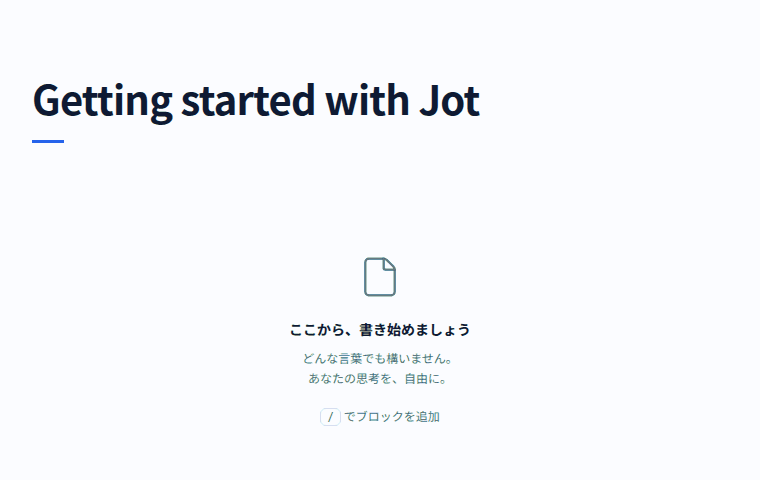
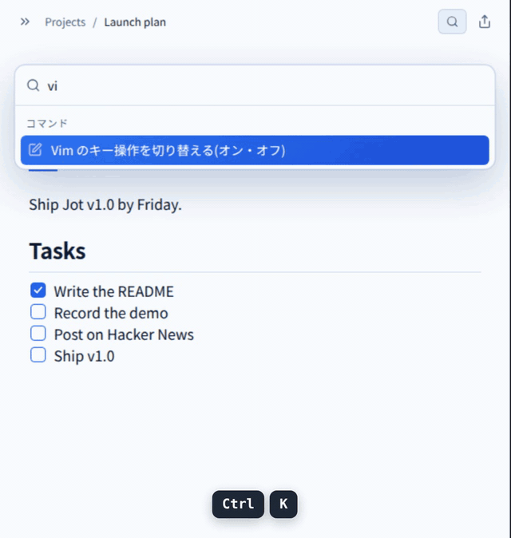
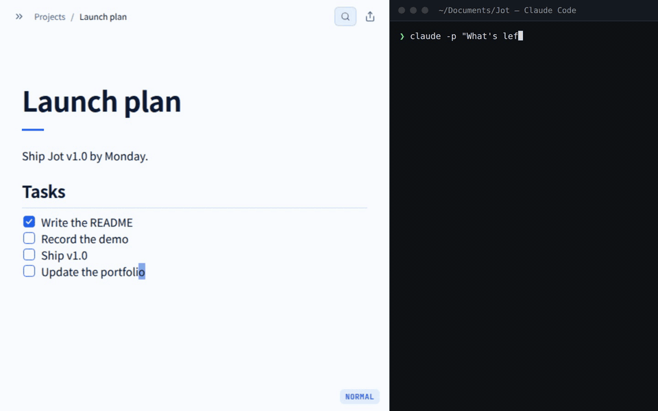
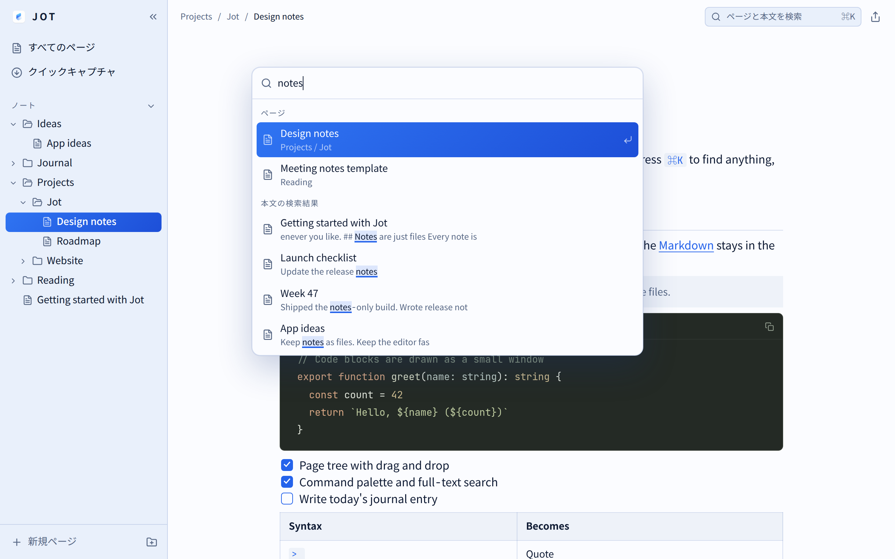

A work log your AI can read
Keep project notes in Jot and point your coding agent at the same folder. It reads the plain files directly — no export, no plugin.
Jot is a fast, local-first notes app. Every note is a plain .md file in a folder you choose — readable by any editor, any tool, and your AI.
macOS (.dmg) · Linux (AppImage) · Linux (.deb)
Free & open source · macOS & Linux · v1.0
When you'll use it
Keep project notes in Jot and point your coding agent at the same folder. It reads the plain files directly — no export, no plugin.
Turn on Vim mode and keep moving with hjkl. It keeps working while a Japanese IME is on, which most editors get wrong.
Press ⌃⌥Space anywhere. A small window appears, you type, and it lands in your inbox note.
No database, no proprietary format. If Jot disappears tomorrow, your folder of Markdown is still there.
Features
Type # , - , [] or > and the line becomes a heading, list, checklist or quote. Press / for the block menu. Blocks you didn't touch are saved back byte-for-byte.

Optional Vim keybindings with normal, insert and visual modes — designed to cooperate with an input method instead of fighting it.

The folder is the source of truth. Edit the same note in Jot, in your terminal, or let an AI agent read it — everyone sees the same text.

⌘K searches page titles, full text and commands from one input. Pages nest into a tree you can drag to reorganize; links follow when you move things.

mermaid diagramsInstall
Prefer to build it yourself? See Build from source.
Shortcuts
| ⌘K | Command palette |
| / | Block menu |
| ⌘F | Find in page |
| ⌘N / ⌘⇧N | New page / new child page |
| ⌘⇧↑ / ⌘⇧↓ | Move block up / down |
| ⌘⇧H | Export page as HTML |
| ⌃⌥Space | Quick capture (global) |
On Linux, read ⌘ as Ctrl.
FAQ
Yes. Jot is open source under the MIT license.
In the folder you pick, as plain .md files. Nothing is uploaded anywhere.
Yes. Point Jot at it. Files you open and save without editing stay byte-for-byte identical.
Not yet. macOS and Linux for now.
The app UI is currently in Japanese, with English coming. The getting-started note follows your system language.